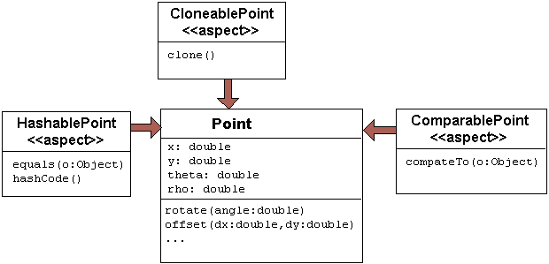

Introduction
This chapter consists entirely of examples of AspectJ use.
The examples can be grouped into four categories:
- technique
-
Examples which illustrate how to use one or more features of the language
- development
-
Examples of using AspectJ during the development phase of a project
- production
-
Examples of using AspectJ to provide functionality in an application
- reusable
-
Examples of reuse of aspects and pointcuts
Obtaining, Compiling and Running the Examples
The examples source code is part of the AspectJ distribution which may be downloaded from the AspectJ project page.
Compiling most examples is straightforward. Go the InstallDir/examples
directory, and look for a .lst file in one of the example
subdirectories. Use the -arglist option to ajc to compile the
example. For instance, to compile the telecom example with billing, type
ajc -argfile telecom/billing.lstTo run the examples, your classpath must include the AspectJ run-time
Java archive (aspectjrt.jar). You may either set the CLASSPATH
environment variable or use the -classpath command line option to the
Java interpreter:
(In Unix use a : in the CLASSPATH)
java -classpath ".:InstallDir/lib/aspectjrt.jar" telecom.billingSimulation(In Windows use a ; in the CLASSPATH)
java -classpath ".;InstallDir/lib/aspectjrt.jar" telecom.billingSimulationBasic Techniques
This section presents two basic techniques of using AspectJ, one each from the two fundamental ways of capturing crosscutting concerns: with dynamic join points and advice, and with static introduction. Advice changes an application’s behavior. Introduction changes both an application’s behavior and its structure.
The first example, Join Points and thisJoinPoint, is about
gathering and using information about the join point that has triggered
some advice. The second example, Roles and Views,
concerns a crosscutting view of an existing class hierarchy.
Join Points and thisJoinPoint
(The code for this example is in InstallDir/examples/tjp.)
A join point is some point in the execution of a program together with a view into the execution context when that point occurs. Join points are picked out by pointcuts. When a program reaches a join point, advice on that join point may run in addition to (or instead of) the join point itself.
When using a pointcut that picks out join points of a single kind by name, typicaly the the advice will know exactly what kind of join point it is associated with. The pointcut may even publish context about the join point. Here, for example, since the only join points picked out by the pointcut are calls of a certain method, we can get the target value and one of the argument values of the method calls directly.
before(Point p, int x):
target(p) &&
args(x) &&
call(void setX(int))
{
if (!p.assertX(x))
System.out.println("Illegal value for x"); return;
}But sometimes the shape of the join point is not so clear. For instance, suppose a complex application is being debugged, and we want to trace when any method of some class is executed. The pointcut
pointcut execsInProblemClass():
within(ProblemClass) &&
execution(* *(..));will pick out each execution join point of every method defined within
ProblemClass. Since advice executes at each join point picked out by
the pointcut, we can reasonably ask which join point was reached.
Information about the join point that was matched is available to advice
through the special variable thisJoinPoint, of type
org.aspectj.lang.JoinPoint.
Through this object we can access information such as
-
the kind of join point that was matched
-
the source location of the code associated with the join point
-
normal, short and long string representations of the current join point
-
the actual argument values of the join point
-
the signature of the member associated with the join point
-
the currently executing object
-
the target object
-
an object encapsulating the static information about the join point. This is also available through the special variable
thisJoinPointStaticPart.
The Demo class
The class tjp.Demo in tjp/Demo.java defines two methods foo and
bar with different parameter lists and return types. Both are called,
with suitable arguments, by Demo's go method which was invoked from
within its main method.
public class Demo {
static Demo d;
public static void main(String[] args) {
new Demo().go();
}
void go() {
d = new Demo();
d.foo(1,d);
System.out.println(d.bar(new Integer(3)));
}
void foo(int i, Object o) {
System.out.println("Demo.foo(" + i + ", " + o + ")\n");
}
String bar (Integer j) {
System.out.println("Demo.bar(" + j + ")\n");
return "Demo.bar(" + j + ")";
}
}The GetInfo aspect
This aspect uses around advice to intercept the execution of methods
foo and bar in Demo, and prints out information garnered from
thisJoinPoint to the console.
aspect GetInfo {
static final void println(String s){ System.out.println(s); }
pointcut goCut(): cflow(this(Demo) && execution(void go()));
pointcut demoExecs(): within(Demo) && execution(* *(..));
Object around(): demoExecs() && !execution(* go()) && goCut() {
println("Intercepted message: " +
thisJoinPointStaticPart.getSignature().getName());
println("in class: " +
thisJoinPointStaticPart.getSignature().getDeclaringType().getName());
printParameters(thisJoinPoint);
println("Running original method: \n" );
Object result = proceed();
println(" result: " + result );
return result;
}
static private void printParameters(JoinPoint jp) {
println("Arguments: " );
Object[] args = jp.getArgs();
String[] names = ((CodeSignature)jp.getSignature()).getParameterNames();
Class[] types = ((CodeSignature)jp.getSignature()).getParameterTypes();
for (int i = 0; i < args.length; i++) {
println(
" " + i + ". " + names[i] +
" : " + types[i].getName() +
" = " + args[i]);
}
}
}Defining the scope of a pointcut
The pointcut goCut is defined as
cflow(this(Demo)) && execution(void go())so that only executions made in the control flow of Demo.go are
intercepted. The control flow from the method go includes the
execution of go itself, so the definition of the around advice
includes !execution(* go()) to exclude it from the set of executions
advised.
Printing the class and method name
The name of the method and that method’s defining class are available as
parts of the
org.aspectj.lang.Signature
object returned by calling getSignature() on either thisJoinPoint or
thisJoinPointStaticPart.
Printing the parameters
The static portions of the parameter details, the name and types of the
parameters, can be accessed through the
org.aspectj.lang.reflect.CodeSignature
associated with the join point. All execution join points have code
signatures, so the cast to CodeSignature cannot fail.
The dynamic portions of the parameter details, the actual values of the parameters, are accessed directly from the execution join point object.
Roles and Views
(The code for this example is in InstallDir/examples/introduction.)
Like advice, inter-type declarations are members of an aspect. They declare members that act as if they were defined on another class. Unlike advice, inter-type declarations affect not only the behavior of the application, but also the structural relationship between an application’s classes.
This is crucial: Publically affecting the class structure of an application makes these modifications available to other components of the application.
Aspects can declare inter-type
-
fields
-
methods
-
constructors
and can also declare that target types
-
implement new interfaces
-
extend new classes
This example provides three illustrations of the use of inter-type
declarations to encapsulate roles or views of a class. The class our
aspect will be dealing with, Point, is a simple class with rectangular
and polar coordinates. Our inter-type declarations will make the class
Point, in turn, cloneable, hashable, and comparable. These facilities
are provided by AspectJ without having to modify the code for the class
Point.
The Point class
The Point class defines geometric points whose interface includes
polar and rectangular coordinates, plus some simple operations to
relocate points. Point's implementation has attributes for both its
polar and rectangular coordinates, plus flags to indicate which
currently reflect the position of the point. Some operations cause the
polar coordinates to be updated from the rectangular, and some have the
opposite effect. This implementation, which is in intended to give the
minimum number of conversions between coordinate systems, has the
property that not all the attributes stored in a Point object are
necessary to give a canonical representation such as might be used for
storing, comparing, cloning or making hash codes from points. Thus the
aspects, though simple, are not totally trivial.
The diagram below gives an overview of the aspects and their interaction
with the class Point.

The CloneablePoint aspect
This first aspect is responsible for Point's implementation of the
Cloneable interface. It declares that Point implements Cloneable
with a declare parents form, and also publically declares a
specialized Point's clone() method. In Java, all objects inherit the
method clone from the class Object, but an object is not cloneable
unless its class also implements the interface Cloneable. In addition,
classes frequently have requirements over and above the simple
bit-for-bit copying that Object.clone does. In our case, we want to
update a Point's coordinate systems before we actually clone the
Point. So our aspect makes sure that Point overrides Object.clone
with a new method that does what we want.
We also define a test main method in the aspect for convenience.
public aspect CloneablePoint {
declare parents: Point implements Cloneable;
public Object Point.clone() throws CloneNotSupportedException {
// we choose to bring all fields up to date before cloning.
makeRectangular();
makePolar();
return super.clone();
}
public static void main(String[] args) {
Point p1 = new Point();
Point p2 = null;
p1.setPolar(Math.PI, 1.0);
try {
p2 = (Point)p1.clone();
} catch (CloneNotSupportedException e) {}
System.out.println("p1 =" + p1);
System.out.println("p2 =" + p2);
p1.rotate(Math.PI / -2);
System.out.println("p1 =" + p1);
System.out.println("p2 =" + p2);
}
}The ComparablePoint aspect
ComparablePoint is responsible for Point's implementation of the
Comparable interface.
The interface Comparable defines the single method compareTo which
can be use to define a natural ordering relation among the objects of a
class that implement it.
ComparablePoint uses declare parents to declare that Point implements Comparable,
and also publically declares the appropriate compareTo(Object) method:
A Point p1 is said to be less than another Point p2 if p1 is closer to the origin.
We also define a test main method in the aspect for convenience.
public aspect ComparablePoint {
declare parents: Point implements Comparable;
public int Point.compareTo(Object o) {
return (int) (this.getRho() - ((Point)o).getRho());
}
public static void main(String[] args) {
Point p1 = new Point();
Point p2 = new Point();
System.out.println("p1 =?= p2 :" + p1.compareTo(p2));
p1.setRectangular(2,5);
p2.setRectangular(2,5);
System.out.println("p1 =?= p2 :" + p1.compareTo(p2));
p2.setRectangular(3,6);
System.out.println("p1 =?= p2 :" + p1.compareTo(p2));
p1.setPolar(Math.PI, 4);
p2.setPolar(Math.PI, 4);
System.out.println("p1 =?= p2 :" + p1.compareTo(p2));
p1.rotate(Math.PI / 4.0);
System.out.println("p1 =?= p2 :" + p1.compareTo(p2));
p1.offset(1,1);
System.out.println("p1 =?= p2 :" + p1.compareTo(p2));
}
}The HashablePoint aspect
Our third aspect is responsible for Point's overriding of Object's
equals and hashCode methods in order to make Points hashable.
The method Object.hashCode returns an integer, suitable for use as a
hash table key. It is not required that two objects which are not equal
(according to the equals method) return different integer results from
hashCode but it can improve performance when the integer is used as a
key into a data structure. However, any two objects which are equal must
return the same integer value from a call to hashCode. Since the
default implementation of Object.equals returns true only when two
objects are identical, we need to redefine both equals and hashCode
to work correctly with objects of type Point. For example, we want two
Point objects to test equal when they have the same x and y
values, or the same rho and theta values, not just when they refer
to the same object. We do this by overriding the methods equals and
hashCode in the class Point.
So HashablePoint declares Point's hashCode and equals methods,
using Point's rectangular coordinates to generate a hash code and to
test for equality. The x and y coordinates are obtained using the
appropriate get methods, which ensure the rectangular coordinates are
up-to-date before returning their values.
And again, we supply a main method in the aspect for testing.
public aspect HashablePoint {
public int Point.hashCode() {
return (int) (getX() + getY() % Integer.MAX_VALUE);
}
public boolean Point.equals(Object o) {
if (o == this) return true;
if (!(o instanceof Point)) return false;
Point other = (Point)o;
return (getX() == other.getX()) && (getY() == other.getY());
}
public static void main(String[] args) {
Hashtable h = new Hashtable();
Point p1 = new Point();
p1.setRectangular(10, 10);
Point p2 = new Point();
p2.setRectangular(10, 10);
System.out.println("p1 = " + p1);
System.out.println("p2 = " + p2);
System.out.println("p1.hashCode() = " + p1.hashCode());
System.out.println("p2.hashCode() = " + p2.hashCode());
h.put(p1, "P1");
System.out.println("Got: " + h.get(p2));
}
}Development Aspects
Tracing using aspects
(The code for this example is in InstallDir/examples/tracing.)
Writing a class that provides tracing functionality is easy: a couple of
functions, a boolean flag for turning tracing on and off, a choice for
an output stream, maybe some code for formatting the output — these are
all elements that Trace classes have been known to have. Trace
classes may be highly sophisticated, too, if the task of tracing the
execution of a program demands it.
But developing the support for tracing is just one part of the effort of inserting tracing into a program, and, most likely, not the biggest part. The other part of the effort is calling the tracing functions at appropriate times. In large systems, this interaction with the tracing support can be overwhelming. Plus, tracing is one of those things that slows the system down, so these calls should often be pulled out of the system before the product is shipped. For these reasons, it is not unusual for developers to write ad-hoc scripting programs that rewrite the source code by inserting/deleting trace calls before and after the method bodies.
AspectJ can be used for some of these tracing concerns in a less ad-hoc way. Tracing can be seen as a concern that crosscuts the entire system and as such is amenable to encapsulation in an aspect. In addition, it is fairly independent of what the system is doing. Therefore tracing is one of those kind of system aspects that can potentially be plugged in and unplugged without any side-effects in the basic functionality of the system.
An Example Application
Throughout this example we will use a simple application that contains
only four classes. The application is about shapes. The TwoDShape
class is the root of the shape hierarchy:
public abstract class TwoDShape {
protected double x, y;
protected TwoDShape(double x, double y) {
this.x = x; this.y = y;
}
public double getX() { return x; }
public double getY() { return y; }
public double distance(TwoDShape s) {
double dx = Math.abs(s.getX() - x);
double dy = Math.abs(s.getY() - y);
return Math.sqrt(dx*dx + dy*dy);
}
public abstract double perimeter();
public abstract double area();
public String toString() {
return (" @ (" + String.valueOf(x) + ", " + String.valueOf(y) + ") ");
}
}TwoDShape has two subclasses, Circle and Square:
public class Circle extends TwoDShape {
protected double r;
public Circle(double x, double y, double r) {
super(x, y); this.r = r;
}
public Circle(double x, double y) { this( x, y, 1.0); }
public Circle(double r) { this(0.0, 0.0, r); }
public Circle() { this(0.0, 0.0, 1.0); }
public double perimeter() {
return 2 * Math.PI * r;
}
public double area() {
return Math.PI * r*r;
}
public String toString() {
return ("Circle radius = " + String.valueOf(r) + super.toString());
}
}public class Square extends TwoDShape {
protected double s; // side
public Square(double x, double y, double s) {
super(x, y); this.s = s;
}
public Square(double x, double y) { this( x, y, 1.0); }
public Square(double s) { this(0.0, 0.0, s); }
public Square() { this(0.0, 0.0, 1.0); }
public double perimeter() {
return 4 * s;
}
public double area() {
return s*s;
}
public String toString() {
return ("Square side = " + String.valueOf(s) + super.toString());
}
}To run this application, compile the classes. You can do it with or
without ajc, the AspectJ compiler. If you’ve installed AspectJ, go to
the directory InstallDir/examples and type:
ajc -argfile tracing/notrace.lstTo run the program, type
java tracing.ExampleMain(we don’t need anything special on the classpath since this is pure Java code). You should see the following output:
c1.perimeter() = 12.566370614359172
c1.area() = 12.566370614359172
s1.perimeter() = 4.0
s1.area() = 1.0
c2.distance(c1) = 4.242640687119285
s1.distance(c1) = 2.23606797749979
s1.toString(): Square side = 1.0 @ (1.0, 2.0)Tracing - Version 1
In a first attempt to insert tracing in this application, we will start
by writing a Trace class that is exactly what we would write if we
didn’t have aspects. The implementation is in version1/Trace.java. Its
public interface is:
public class Trace {
public static int TRACELEVEL = 0;
public static void initStream(PrintStream s) {...}
public static void traceEntry(String str) {...}
public static void traceExit(String str) {...}
}If we didn’t have AspectJ, we would have to insert calls to traceEntry
and traceExit in all methods and constructors we wanted to trace, and
to initialize TRACELEVEL and the stream. If we wanted to trace all the
methods and constructors in our example, that would amount to around 40
calls, and we would hope we had not forgotten any method. But we can do
that more consistently and reliably with the following aspect (found in
version1/TraceMyClasses.java):
public aspect TraceMyClasses {
pointcut myClass(): within(TwoDShape) || within(Circle) || within(Square);
pointcut myConstructor(): myClass() && execution(new(..));
pointcut myMethod(): myClass() && execution(* *(..));
before (): myConstructor() {
Trace.traceEntry("" + thisJoinPointStaticPart.getSignature());
}
after(): myConstructor() {
Trace.traceExit("" + thisJoinPointStaticPart.getSignature());
}
before (): myMethod() {
Trace.traceEntry("" + thisJoinPointStaticPart.getSignature());
}
after(): myMethod() {
Trace.traceExit("" + thisJoinPointStaticPart.getSignature());
}
}This aspect performs the tracing calls at appropriate times. According to this aspect, tracing is performed at the entrance and exit of every method and constructor defined within the shape hierarchy.
What is printed at before and after each of the traced join points is
the signature of the method executing. Since the signature is static
information, we can get it through thisJoinPointStaticPart.
To run this version of tracing, go to the directory
InstallDir/examples and type:
ajc -argfile tracing/tracev1.lstRunning the main method of tracing.version1.TraceMyClasses should
produce the output:
--> tracing.TwoDShape(double, double)
<-- tracing.TwoDShape(double, double)
--> tracing.Circle(double, double, double)
<-- tracing.Circle(double, double, double)
--> tracing.TwoDShape(double, double)
<-- tracing.TwoDShape(double, double)
--> tracing.Circle(double, double, double)
<-- tracing.Circle(double, double, double)
--> tracing.Circle(double)
<-- tracing.Circle(double)
--> tracing.TwoDShape(double, double)
<-- tracing.TwoDShape(double, double)
--> tracing.Square(double, double, double)
<-- tracing.Square(double, double, double)
--> tracing.Square(double, double)
<-- tracing.Square(double, double)
--> double tracing.Circle.perimeter()
<-- double tracing.Circle.perimeter()
c1.perimeter() = 12.566370614359172
--> double tracing.Circle.area()
<-- double tracing.Circle.area()
c1.area() = 12.566370614359172
--> double tracing.Square.perimeter()
<-- double tracing.Square.perimeter()
s1.perimeter() = 4.0
--> double tracing.Square.area()
<-- double tracing.Square.area()
s1.area() = 1.0
--> double tracing.TwoDShape.distance(TwoDShape)
--> double tracing.TwoDShape.getX()
<-- double tracing.TwoDShape.getX()
--> double tracing.TwoDShape.getY()
<-- double tracing.TwoDShape.getY()
<-- double tracing.TwoDShape.distance(TwoDShape)
c2.distance(c1) = 4.242640687119285
--> double tracing.TwoDShape.distance(TwoDShape)
--> double tracing.TwoDShape.getX()
<-- double tracing.TwoDShape.getX()
--> double tracing.TwoDShape.getY()
<-- double tracing.TwoDShape.getY()
<-- double tracing.TwoDShape.distance(TwoDShape)
s1.distance(c1) = 2.23606797749979
--> String tracing.Square.toString()
--> String tracing.TwoDShape.toString()
<-- String tracing.TwoDShape.toString()
<-- String tracing.Square.toString()
s1.toString(): Square side = 1.0 @ (1.0, 2.0)When TraceMyClasses.java is not provided to ajc, the aspect does not
have any affect on the system and the tracing is unplugged.
Tracing - Version 2
Another way to accomplish the same thing would be to write a reusable
tracing aspect that can be used not only for these application classes,
but for any class. One way to do this is to merge the tracing
functionality of Trace - version1 with the crosscutting support of
TraceMyClasses - version1. We end up with a Trace aspect (found in
version2/Trace.java) with the following public interface
abstract aspect Trace {
public static int TRACELEVEL = 2;
public static void initStream(PrintStream s) {...}
protected static void traceEntry(String str) {...}
protected static void traceExit(String str) {...}
abstract pointcut myClass();
}In order to use it, we need to define our own subclass that knows about
our application classes, in version2/TraceMyClasses.java:
public aspect TraceMyClasses extends Trace {
pointcut myClass(): within(TwoDShape) || within(Circle) || within(Square);
public static void main(String[] args) {
Trace.TRACELEVEL = 2;
Trace.initStream(System.err);
ExampleMain.main(args);
}
}Notice that we’ve simply made the pointcut classes, that was an
abstract pointcut in the super-aspect, concrete. To run this version of
tracing, go to the directory examples and type:
ajc -argfile tracing/tracev2.lstThe file tracev2.lst lists the application classes as well as this
version of the files Trace.java and TraceMyClasses.java. Running the
main method of tracing.version2.TraceMyClasses should output exactly
the same trace information as that from version 1.
The entire implementation of the new Trace class is:
abstract aspect Trace {
// implementation part
public static int TRACELEVEL = 2;
protected static PrintStream stream = System.err;
protected static int callDepth = 0;
public static void initStream(PrintStream s) {
stream = s;
}
protected static void traceEntry(String str) {
if (TRACELEVEL == 0) return;
if (TRACELEVEL == 2) callDepth++;
printEntering(str);
}
protected static void traceExit(String str) {
if (TRACELEVEL == 0) return;
printExiting(str);
if (TRACELEVEL == 2) callDepth--;
}
private static void printEntering(String str) {
printIndent();
stream.println("--> " + str);
}
private static void printExiting(String str) {
printIndent();
stream.println("<-- " + str);
}
private static void printIndent() {
for (int i = 0; i < callDepth; i++)
stream.print(" ");
}
// protocol part
abstract pointcut myClass();
pointcut myConstructor(): myClass() && execution(new(..));
pointcut myMethod(): myClass() && execution(* *(..));
before(): myConstructor() {
traceEntry("" + thisJoinPointStaticPart.getSignature());
}
after(): myConstructor() {
traceExit("" + thisJoinPointStaticPart.getSignature());
}
before(): myMethod() {
traceEntry("" + thisJoinPointStaticPart.getSignature());
}
after(): myMethod() {
traceExit("" + thisJoinPointStaticPart.getSignature());
}
}This version differs from version 1 in several subtle ways. The first
thing to notice is that this Trace class merges the functional part of
tracing with the crosscutting of the tracing calls. That is, in version
1, there was a sharp separation between the tracing support (the class
Trace) and the crosscutting usage of it (by the class
TraceMyClasses). In this version those two things are merged. That’s
why the description of this class explicitly says that "Trace messages
are printed before and after constructors and methods are," which is
what we wanted in the first place. That is, the placement of the calls,
in this version, is established by the aspect class itself, leaving less
opportunity for misplacing calls.
A consequence of this is that there is no need for providing
traceEntry and traceExit as public operations of this class. You can
see that they were classified as protected. They are supposed to be
internal implementation details of the advice.
The key piece of this aspect is the abstract pointcut classes that
serves as the base for the definition of the pointcuts constructors and
methods. Even though classes is abstract, and therefore no concrete
classes are mentioned, we can put advice on it, as well as on the
pointcuts that are based on it. The idea is "we don’t know exactly what
the pointcut will be, but when we do, here’s what we want to do with
it." In some ways, abstract pointcuts are similar to abstract methods.
Abstract methods don’t provide the implementation, but you know that the
concrete subclasses will, so you can invoke those methods.
Production Aspects
A Bean Aspect
(The code for this example is in InstallDir/examples/bean.)
This example examines an aspect that makes Point objects into Java beans with bound properties.
Java beans are reusable software components that can be visually
manipulated in a builder tool. The requirements for an object to be a
bean are few. Beans must define a no-argument constructor and must be
either Serializable or Externalizable. Any properties of the object
that are to be treated as bean properties should be indicated by the
presence of appropriate get and set methods whose names are
getproperty and setproperty where property is the name of
a field in the bean class. Some bean properties, known as bound
properties, fire events whenever their values change so that any
registered listeners (such as, other beans) will be informed of those
changes. Making a bound property involves keeping a list of registered
listeners, and creating and dispatching event objects in methods that
change the property values, such as setproperty methods.
Point is a simple class representing points with rectangular
coordinates. Point does not know anything about being a bean: there
are set methods for x and y but they do not fire events, and the
class is not serializable. Bound is an aspect that makes Point a
serializable class and makes its get and set methods support the
bound property protocol.
The Point class
The Point class is a very simple class with trivial getters and
setters, and a simple vector offset method.
class Point {
protected int x = 0;
protected int y = 0;
public int getX() {
return x;
}
public int getY() {
return y;
}
public void setRectangular(int newX, int newY) {
setX(newX);
setY(newY);
}
public void setX(int newX) {
x = newX;
}
public void setY(int newY) {
y = newY;
}
public void offset(int deltaX, int deltaY) {
setRectangular(x + deltaX, y + deltaY);
}
public String toString() {
return "(" + getX() + ", " + getY() + ")" ;
}
}The BoundPoint aspect
The BoundPoint aspect is responsible for Point's "beanness". The
first thing it does is privately declare that each Point has a
support field that holds reference to an instance of
PropertyChangeSupport.
private PropertyChangeSupport Point.support = new PropertyChangeSupport(this);The property change support object must be constructed with a reference
to the bean for which it is providing support, so it is initialized by
passing it this, an instance of Point. Since the support field is
private declared in the aspect, only the code in the aspect can refer to
it.
The aspect also declares Point's methods for registering and managing
listeners for property change events, which delegate the work to the
property change support object:
public void Point.addPropertyChangeListener(PropertyChangeListener listener){
support.addPropertyChangeListener(listener);
}
public void Point.addPropertyChangeListener(String propertyName, PropertyChangeListener listener) {
support.addPropertyChangeListener(propertyName, listener);
}
public void Point.removePropertyChangeListener(String propertyName, PropertyChangeListener listener) {
support.removePropertyChangeListener(propertyName, listener);
}
public void Point.removePropertyChangeListener(PropertyChangeListener listener) {
support.removePropertyChangeListener(listener);
}
public void Point.hasListeners(String propertyName) {
support.hasListeners(propertyName);
}The aspect is also responsible for making sure Point implements the
Serializable interface:
declare parents: Point implements Serializable;Implementing this interface in Java does not require any methods to be
implemented. Serialization for Point objects is provided by the
default serialization method.
The setters pointcut picks out calls to the Point's set methods:
any method whose name begins with “set” and takes one parameter. The
around advice on setters() stores the values of the X and Y
properties, calls the original set method and then fires the
appropriate property change event according to which set method was
called.
aspect BoundPoint {
private PropertyChangeSupport Point.support = new PropertyChangeSupport(this);
public void Point.addPropertyChangeListener(PropertyChangeListener listener) {
support.addPropertyChangeListener(listener);
}
public void Point.addPropertyChangeListener(String propertyName, PropertyChangeListener listener) {
support.addPropertyChangeListener(propertyName, listener);
}
public void Point.removePropertyChangeListener(String propertyName, PropertyChangeListener listener) {
support.removePropertyChangeListener(propertyName, listener);
}
public void Point.removePropertyChangeListener(PropertyChangeListener listener) {
support.removePropertyChangeListener(listener);
}
public void Point.hasListeners(String propertyName) {
support.hasListeners(propertyName);
}
declare parents: Point implements Serializable;
pointcut setter(Point p): call(void Point.set*(*)) && target(p);
void around(Point p): setter(p) {
String propertyName =
thisJoinPointStaticPart.getSignature().getName().substring("set".length());
int oldX = p.getX();
int oldY = p.getY();
proceed(p);
if (propertyName.equals("X")){
firePropertyChange(p, propertyName, oldX, p.getX());
} else {
firePropertyChange(p, propertyName, oldY, p.getY());
}
}
void firePropertyChange(Point p, String property, double oldval, double newval) {
p.support.firePropertyChange(property, new Double(oldval), new Double(newval));
}
}The Test Program
The test program registers itself as a property change listener to a
Point object that it creates and then performs simple manipulation of
that point: calling its set methods and the offset method. Then it
serializes the point and writes it to a file and then reads it back. The
result of saving and restoring the point is that a new point is created.
class Demo implements PropertyChangeListener {
static final String fileName = "test.tmp";
public void propertyChange(PropertyChangeEvent e){
System.out.println(
"Property " + e.getPropertyName() + " changed from " +
e.getOldValue() + " to " + e.getNewValue()
);
}
public static void main(String[] args) {
Point p1 = new Point();
p1.addPropertyChangeListener(new Demo());
System.out.println("p1 =" + p1);
p1.setRectangular(5,2);
System.out.println("p1 =" + p1);
p1.setX( 6 );
p1.setY( 3 );
System.out.println("p1 =" + p1);
p1.offset(6,4);
System.out.println("p1 =" + p1);
save(p1, fileName);
Point p2 = (Point) restore(fileName);
System.out.println("Had: " + p1);
System.out.println("Got: " + p2);
}
// ...
}Compiling and Running the Example
To compile and run this example, go to the examples directory and type:
ajc -argfile bean/files.lst
java bean.DemoThe Subject/Observer Protocol
(The code for this example is in InstallDir/examples/observer.)
This demo illustrates how the Subject/Observer design pattern can be coded with aspects.
The demo consists of the following: A colored label is a renderable object that has a color that cycles through a set of colors, and a number that records the number of cycles it has been through. A button is an action item that records when it is clicked.
With these two kinds of objects, we can build up a Subject/Observer relationship in which colored labels observe the clicks of buttons; that is, where colored labels are the observers and buttons are the subjects.
The demo is designed and implemented using the Subject/Observer design pattern. The remainder of this example explains the classes and aspects of this demo, and tells you how to run it.
Generic Components
The generic parts of the protocol are the interfaces Subject and
Observer, and the abstract aspect SubjectObserverProtocol. The
Subject interface is simple, containing methods to add, remove, and
view Observer objects, and a method for getting data about state
changes:
interface Subject {
void addObserver(Observer obs);
void removeObserver(Observer obs);
Vector getObservers();
Object getData();
}The Observer interface is just as simple, with methods to set and get
Subject objects, and a method to call when the subject gets updated.
interface Observer {
void setSubject(Subject s);
Subject getSubject();
void update();
}The SubjectObserverProtocol aspect contains within it all of the
generic parts of the protocol, namely, how to fire the Observer
objects' update methods when some state changes in a subject.
abstract aspect SubjectObserverProtocol {
abstract pointcut stateChanges(Subject s);
after(Subject s): stateChanges(s) {
for (int i = 0; i < s.getObservers().size(); i++) {
((Observer)s.getObservers().elementAt(i)).update();
}
}
private Vector Subject.observers = new Vector();
public void Subject.addObserver(Observer obs) {
observers.addElement(obs);
obs.setSubject(this);
}
public void Subject.removeObserver(Observer obs) {
observers.removeElement(obs);
obs.setSubject(null);
}
public Vector Subject.getObservers() { return observers; }
private Subject Observer.subject = null;
public void Observer.setSubject(Subject s) { subject = s; }
public Subject Observer.getSubject() { return subject; }
}Note that this aspect does three things. It define an abstract pointcut
that extending aspects can override. It defines advice that should run
after the join points of the pointcut. And it declares an inter-type
field and two inter-type methods so that each Observer can hold onto
its Subject.
Application Classes
Button objects extend java.awt.Button, and all they do is make sure
the void click() method is called whenever a button is clicked.
class Button extends java.awt.Button {
static final Color defaultBackgroundColor = Color.gray;
static final Color defaultForegroundColor = Color.black;
static final String defaultText = "cycle color";
Button(Display display) {
super();
setLabel(defaultText);
setBackground(defaultBackgroundColor);
setForeground(defaultForegroundColor);
addActionListener(new ActionListener() {
public void actionPerformed(ActionEvent e) {
Button.this.click();
}
});
display.addToFrame(this);
}
public void click() {}
}Note that this class knows nothing about being a Subject.
ColorLabel objects are labels that support the void colorCycle() method. Again, they know nothing about being an observer.
class ColorLabel extends Label {
ColorLabel(Display display) {
super();
display.addToFrame(this);
}
final static Color[] colors =
{ Color.red, Color.blue, Color.green, Color.magenta };
private int colorIndex = 0;
private int cycleCount = 0;
void colorCycle() {
cycleCount++;
colorIndex = (colorIndex + 1) % colors.length;
setBackground(colors[colorIndex]);
setText("" + cycleCount);
}
}Finally, the SubjectObserverProtocolImpl implements the
subject/observer protocol, with Button objects as subjects and
ColorLabel objects as observers:
package observer;
import java.util.Vector;
aspect SubjectObserverProtocolImpl extends SubjectObserverProtocol {
declare parents: Button implements Subject;
public Object Button.getData() { return this; }
declare parents: ColorLabel implements Observer;
public void ColorLabel.update() {
colorCycle();
}
pointcut stateChanges(Subject s):
target(s) &&
call(void Button.click());
}It does this by assuring that Button and ColorLabel implement the
appropriate interfaces, declaring that they implement the methods
required by those interfaces, and providing a definition for the
abstract stateChanges pointcut. Now, every time a Button is clicked,
all ColorLabel objects observing that button will colorCycle.
Compiling and Running
Demo is the top class that starts this demo. It instantiates a two
buttons and three observers and links them together as subjects and
observers. So to run the demo, go to the examples directory and type:
ajc -argfile observer/files.lst
java observer.DemoA Simple Telecom Simulation
(The code for this example is in InstallDir/examples/telecom.)
This example illustrates some ways that dependent concerns can be encoded with aspects. It uses an example system comprising a simple model of telephone connections to which timing and billing features are added using aspects, where the billing feature depends upon the timing feature.
The Application
The example application is a simple simulation of a telephony system in which customers make, accept, merge and hang-up both local and long distance calls. The application architecture is in three layers.
-
The basic objects provide basic functionality to simulate customers, calls and connections (regular calls have one connection, conference calls have more than one).
-
The timing feature is concerned with timing the connections and keeping the total connection time per customer. Aspects are used to add a timer to each connection and to manage the total time per customer.
-
The billing feature is concerned with charging customers for the calls they make. Aspects are used to calculate a charge per connection and, upon termination of a connection, to add the charge to the appropriate customer’s bill. The billing aspect builds upon the timing aspect: it uses a pointcut defined in Timing and it uses the timers that are associated with connections.
The simulation of system has three configurations: basic, timing and
billing. Programs for the three configurations are in classes
BasicSimulation, TimingSimulation and BillingSimulation. These
share a common superclass AbstractSimulation, which defines the method
run with the simulation itself and the method wait used to simulate
elapsed time.
The Basic Objects
The telecom simulation comprises the classes Customer, Call and the
abstract class Connection with its two concrete subclasses Local and
LongDistance. Customers have a name and a numeric area code. They also
have methods for managing calls. Simple calls are made between one
customer (the caller) and another (the receiver), a Connection object
is used to connect them. Conference calls between more than two
customers will involve more than one connection. A customer may be
involved in many calls at one time.

The Customer class
Customer has methods call, pickup, hangup and merge for
managing calls.
public class Customer {
private String name;
private int areacode;
private Vector calls = new Vector();
protected void removeCall(Call c){
calls.removeElement(c);
}
protected void addCall(Call c){
calls.addElement(c);
}
public Customer(String name, int areacode) {
this.name = name;
this.areacode = areacode;
}
public String toString() {
return name + "(" + areacode + ")";
}
public int getAreacode(){
return areacode;
}
public boolean localTo(Customer other){
return areacode == other.areacode;
}
public Call call(Customer receiver) {
Call call = new Call(this, receiver);
addCall(call);
return call;
}
public void pickup(Call call) {
call.pickup();
addCall(call);
}
public void hangup(Call call) {
call.hangup(this);
removeCall(call);
}
public void merge(Call call1, Call call2){
call1.merge(call2);
removeCall(call2);
}
}The Call class
Calls are created with a caller and receiver who are customers. If the
caller and receiver have the same area code then the call can be
established with a Local connection (see below), otherwise a
LongDistance connection is required. A call comprises a number of
connections between customers. Initially there is only the connection
between the caller and receiver but additional connections can be added
if calls are merged to form conference calls.
The Connection class
The class Connection models the physical details of establishing a
connection between customers. It does this with a simple state machine
(connections are initially PENDING, then COMPLETED and finally
DROPPED). Messages are printed to the console so that the state of
connections can be observed. Connection is an abstract class with two
concrete subclasses: Local and LongDistance.
abstract class Connection {
public static final int PENDING = 0;
public static final int COMPLETE = 1;
public static final int DROPPED = 2;
Customer caller, receiver;
private int state = PENDING;
Connection(Customer a, Customer b) {
this.caller = a;
this.receiver = b;
}
public int getState(){
return state;
}
public Customer getCaller() { return caller; }
public Customer getReceiver() { return receiver; }
void complete() {
state = COMPLETE;
System.out.println("connection completed");
}
void drop() {
state = DROPPED;
System.out.println("connection dropped");
}
public boolean connects(Customer c){
return (caller == c || receiver == c);
}
}The Local and LongDistance classes
The two kinds of connections supported by our simulation are Local and
LongDistance connections.
class Local extends Connection {
Local(Customer a, Customer b) {
super(a, b);
System.out.println(
"[new local connection from " + a + " to " + b + "]"
);
}
}class LongDistance extends Connection {
LongDistance(Customer a, Customer b) {
super(a, b);
System.out.println(
"[new long distance connection from " + a + " to " + b + "]"
);
}
}Compiling and Running the Basic Simulation
The source files for the basic system are listed in the file
basic.lst. To build and run the basic system, in a shell window, type
these commands:
ajc -argfile telecom/basic.lst
java telecom.BasicSimulationThe Timing aspect
The Timing aspect keeps track of total connection time for each
Customer by starting and stopping a timer associated with each
connection. It uses some helper classes:
The Timer class
A Timer object simply records the current time when it is started and
stopped, and returns their difference when asked for the elapsed time.
The aspect TimerLog (below) can be used to cause the start and stop
times to be printed to standard output.
class Timer {
long startTime, stopTime;
public void start() {
startTime = System.currentTimeMillis();
stopTime = startTime;
}
public void stop() {
stopTime = System.currentTimeMillis();
}
public long getTime() {
return stopTime - startTime;
}
}The TimerLog aspect
The TimerLog aspect can be included in a build to get the timer to
announce when it is started and stopped.
public aspect TimerLog {
after(Timer t): target(t) && call(* Timer.start()) {
System.err.println("Timer started: " + t.startTime);
}
after(Timer t): target(t) && call(* Timer.stop()) {
System.err.println("Timer stopped: " + t.stopTime);
}
}The Timing aspect
The Timing aspect is declares an inter-type field totalConnectTime
for Customer to store the accumulated connection time per Customer.
It also declares that each Connection object has a timer.
public long Customer.totalConnectTime = 0;
private Timer Connection.timer = new Timer();Two pieces of after advice ensure that the timer is started when a
connection is completed and and stopped when it is dropped. The pointcut
endTiming is defined so that it can be used by the Billing aspect.
public aspect Timing {
public long Customer.totalConnectTime = 0;
public long getTotalConnectTime(Customer cust) {
return cust.totalConnectTime;
}
private Timer Connection.timer = new Timer();
public Timer getTimer(Connection conn) { return conn.timer; }
after (Connection c): target(c) && call(void Connection.complete()) {
getTimer(c).start();
}
pointcut endTiming(Connection c): target(c) &&
call(void Connection.drop());
after(Connection c): endTiming(c) {
getTimer(c).stop();
c.getCaller().totalConnectTime += getTimer(c).getTime();
c.getReceiver().totalConnectTime += getTimer(c).getTime();
}
}The Billing aspect
The Billing system adds billing functionality to the telecom application on top of timing.
The Billing aspect declares that each Connection has a payer
inter-type field to indicate who initiated the call and therefore who is
responsible to pay for it. It also declares the inter-type method
callRate of Connection so that local and long distance calls can be
charged differently. The call charge must be calculated after the timer
is stopped; the after advice on pointcut Timing.endTiming does this,
and Billing is declared to be more precedent than Timing to make
sure that this advice runs after Timing's advice on the same join
point. Finally, it declares inter-type methods and fields for Customer
to handle the totalCharge.
public aspect Billing {
// precedence required to get advice on endtiming in the right order
declare precedence: Billing, Timing;
public static final long LOCAL_RATE = 3;
public static final long LONG_DISTANCE_RATE = 10;
public Customer Connection.payer;
public Customer getPayer(Connection conn) { return conn.payer; }
after(Customer cust) returning (Connection conn):
args(cust, ..) && call(Connection+.new(..)) {
conn.payer = cust;
}
public abstract long Connection.callRate();
public long LongDistance.callRate() { return LONG_DISTANCE_RATE; }
public long Local.callRate() { return LOCAL_RATE; }
after(Connection conn): Timing.endTiming(conn) {
long time = Timing.aspectOf().getTimer(conn).getTime();
long rate = conn.callRate();
long cost = rate * time;
getPayer(conn).addCharge(cost);
}
public long Customer.totalCharge = 0;
public long getTotalCharge(Customer cust) { return cust.totalCharge; }
public void Customer.addCharge(long charge) {
totalCharge += charge;
}
}Accessing the inter-type state
Both the aspects Timing and Billing contain the definition of
operations that the rest of the system may want to access. For example,
when running the simulation with one or both aspects, we want to find
out how much time each customer spent on the telephone and how big their
bill is. That information is also stored in the classes, but they are
accessed through static methods of the aspects, since the state they
refer to is private to the aspect.
Take a look at the file TimingSimulation.java. The most important
method of this class is the method report(Customer), which is used in
the method run of the superclass AbstractSimulation. This method is
intended to print out the status of the customer, with respect to the
Timing feature.
protected void report(Customer c){
Timing t = Timing.aspectOf();
System.out.println(c + " spent " + t.getTotalConnectTime(c));
}Compiling and Running
The files timing.lst and billing.lst contain file lists for the timing and billing configurations. To build and run the application with only the timing feature, go to the directory examples and type:
ajc -argfile telecom/timing.lst
java telecom.TimingSimulationTo build and run the application with the timing and billing features, go to the directory examples and type:
ajc -argfile telecom/billing.lst
java telecom.BillingSimulationDiscussion
There are some explicit dependencies between the aspects Billing and
Timing:
-
Billingis declared more precedent thanTimingso thatBilling's after advice runs after that ofTimingwhen they are on the same join point. -
Billinguses the pointcutTiming.endTiming. -
Billingneeds access to the timer associated with a connection.
Reusable Aspects
Tracing using Aspects, Revisited
(The code for this example is in InstallDir/examples/tracing.)
Tracing - Version 3
One advantage of not exposing the methods traceEntry and traceExit as
public operations is that we can easily change their interface without
any dramatic consequences in the rest of the code.
Consider, again, the program without AspectJ. Suppose, for example, that
at some point later the requirements for tracing change, stating that
the trace messages should always include the string representation of
the object whose methods are being traced. This can be achieved in at
least two ways. One way is keep the interface of the methods
traceEntry and traceExit as it was before,
public static void traceEntry(String str);
public static void traceExit(String str);In this case, the caller is responsible for ensuring that the string representation of the object is part of the string given as argument. So, calls must look like:
Trace.traceEntry("Square.distance in " + toString());Another way is to enforce the requirement with a second argument in the trace operations, e.g.
public static void traceEntry(String str, Object obj);
public static void traceExit(String str, Object obj);In this case, the caller is still responsible for sending the right object, but at least there is some guarantees that some object will be passed. The calls will look like:
Trace.traceEntry("Square.distance", this);In either case, this change to the requirements of tracing will have
dramatic consequences in the rest of the code — every call to the trace
operations traceEntry and traceExit must be changed!
Here’s another advantage of doing tracing with an aspect. We’ve already
seen that in version 2 traceEntry and traceExit are not publicly
exposed. So changing their interfaces, or the way they are used, has
only a small effect inside the Trace class. Here’s a partial view at
the implementation of Trace, version 3. The differences with respect
to version 2 are stressed in the comments:
abstract aspect Trace {
public static int TRACELEVEL = 0;
protected static PrintStream stream = null;
protected static int callDepth = 0;
public static void initStream(PrintStream s) {
stream = s;
}
protected static void traceEntry(String str, Object o) {
if (TRACELEVEL == 0) return;
if (TRACELEVEL == 2) callDepth++;
printEntering(str + ": " + o.toString());
}
protected static void traceExit(String str, Object o) {
if (TRACELEVEL == 0) return;
printExiting(str + ": " + o.toString());
if (TRACELEVEL == 2) callDepth--;
}
private static void printEntering(String str) {
printIndent();
stream.println("Entering " + str);
}
private static void printExiting(String str) {
printIndent();
stream.println("Exiting " + str);
}
private static void printIndent() {
for (int i = 0; i < callDepth; i++)
stream.print(" ");
}
abstract pointcut myClass(Object obj);
pointcut myConstructor(Object obj): myClass(obj) && execution(new(..));
pointcut myMethod(Object obj):
myClass(obj) && execution(* *(..)) && !execution(String toString());
before(Object obj): myConstructor(obj) {
traceEntry("" + thisJoinPointStaticPart.getSignature(), obj);
}
after(Object obj): myConstructor(obj) {
traceExit("" + thisJoinPointStaticPart.getSignature(), obj);
}
before(Object obj): myMethod(obj) {
traceEntry("" + thisJoinPointStaticPart.getSignature(), obj);
}
after(Object obj): myMethod(obj) {
traceExit("" + thisJoinPointStaticPart.getSignature(), obj);
}
}As you can see, we decided to apply the first design by preserving the
interface of the methods traceEntry and traceExit. But it doesn’t
matter - we could as easily have applied the second design (the code in
the directory examples/tracing/version3 has the second design). The
point is that the effects of this change in the tracing requirements are
limited to the Trace aspect class.
One implementation change worth noticing is the specification of the pointcuts. They now expose the object. To maintain full consistency with the behavior of version 2, we should have included tracing for static methods, by defining another pointcut for static methods and advising it. We leave that as an exercise.
Moreover, we had to exclude the execution join point of the method
toString from the methods pointcut. The problem here is that
toString is being called from inside the advice. Therefore if we trace
it, we will end up in an infinite recursion of calls. This is a subtle
point, and one that you must be aware when writing advice. If the advice
calls back to the objects, there is always the possibility of recursion.
Keep that in mind!
In fact, esimply excluding the execution join point may not be enough, if there are calls to other traced methods within it - in which case, the restriction should be
&& !cflow(execution(String toString()))excluding both the execution of toString methods and all join points
under that execution.
In summary, to implement the change in the tracing requirements we had
to make a couple of changes in the implementation of the Trace aspect
class, including changing the specification of the pointcuts. That’s
only natural. But the implementation changes were limited to this
aspect. Without aspects, we would have to change the implementation of
every application class.
Finally, to run this version of tracing, go to the directory examples
and type:
ajc -argfile tracing/tracev3.lstThe file tracev3.lst lists the application classes as well as this
version of the files Trace.java and TraceMyClasses.java. To run the
program, type
java tracing.version3.TraceMyClassesThe output should be:
--> tracing.TwoDShape(double, double)
<-- tracing.TwoDShape(double, double)
--> tracing.Circle(double, double, double)
<-- tracing.Circle(double, double, double)
--> tracing.TwoDShape(double, double)
<-- tracing.TwoDShape(double, double)
--> tracing.Circle(double, double, double)
<-- tracing.Circle(double, double, double)
--> tracing.Circle(double)
<-- tracing.Circle(double)
--> tracing.TwoDShape(double, double)
<-- tracing.TwoDShape(double, double)
--> tracing.Square(double, double, double)
<-- tracing.Square(double, double, double)
--> tracing.Square(double, double)
<-- tracing.Square(double, double)
--> double tracing.Circle.perimeter()
<-- double tracing.Circle.perimeter()
c1.perimeter() = 12.566370614359172
--> double tracing.Circle.area()
<-- double tracing.Circle.area()
c1.area() = 12.566370614359172
--> double tracing.Square.perimeter()
<-- double tracing.Square.perimeter()
s1.perimeter() = 4.0
--> double tracing.Square.area()
<-- double tracing.Square.area()
s1.area() = 1.0
--> double tracing.TwoDShape.distance(TwoDShape)
--> double tracing.TwoDShape.getX()
<-- double tracing.TwoDShape.getX()
--> double tracing.TwoDShape.getY()
<-- double tracing.TwoDShape.getY()
<-- double tracing.TwoDShape.distance(TwoDShape)
c2.distance(c1) = 4.242640687119285
--> double tracing.TwoDShape.distance(TwoDShape)
--> double tracing.TwoDShape.getX()
<-- double tracing.TwoDShape.getX()
--> double tracing.TwoDShape.getY()
<-- double tracing.TwoDShape.getY()
<-- double tracing.TwoDShape.distance(TwoDShape)
s1.distance(c1) = 2.23606797749979
--> String tracing.Square.toString()
--> String tracing.TwoDShape.toString()
<-- String tracing.TwoDShape.toString()
<-- String tracing.Square.toString()
s1.toString(): Square side = 1.0 @ (1.0, 2.0)